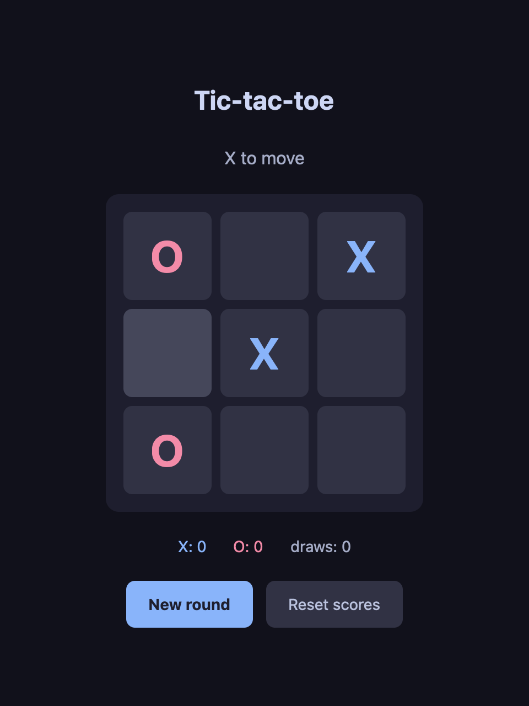

- Version
- 0.2.0
- Released
- 2026-10-13
- License
- MIT
- Status
- Experimental
gpuix-svelte renders Svelte components with GPUI, the UI framework behind the Zed editor.
Your app opens in its own native window. GPUI lays it out with flexbox and paints it with Metal, DirectX or Vulkan. There’s no DOM or webview, and the UI shares its process with the whole of Node or Bun: files, processes, SQLite and native addons.
npm create gpuix-svelte@latest my-app

Quick start
You need Node.js 24 or later, or Bun 1.4 or later, on macOS (Apple Silicon), Windows (x64) or Linux (x64). The GPUI binary comes prebuilt from npm, so npm install is the whole setup.
$ npm create gpuix-svelte@latest my-app
Created my-app. Next:
cd my-app
npm install
npm start # opens the window; edit App.svelte to hot-reload
npm test # headless test (macOS and Windows)
npm run build # standalone executable in dist/ (requires Bun)bun create gpuix-svelte my-app
cd my-app
bun install
bun run startnpm start opens a counter in its own window, and the terminal shows:
[gpuix-svelte] created native window
[gpuix-svelte] mount completeHot reload
When you save a .svelte file, render_hot remounts the app in the same process and logs [gpuix-svelte] remount complete. Fig. 2 shows this change, saved with the window open:
.primary {- background-color: #a6e3a1;- color: #1e1e2e;+ background-color: #ff3e00;+ color: #ffffff; }

State kept in a .svelte.ts module survives the reload. The guide shows how.
:hover colour, #94e2d5, and not #a6e3a1.
What carries over from Svelte
The first 14 lines of the starter’s App.svelte. Apart from testId, nothing in them is specific to GPUI.
testId.
<script lang="ts">
let count = $state(0);
</script>
<div class="app">
<div class="card">
<div class="count" testId="count">{count}</div>
<div class="row">
<div class="btn" testId="minus" onclick={() => count--}>-</div>
<div class="btn primary" testId="plus" onclick={() => count++}>+</div>
</div>
<div class="hint">Edit App.svelte and save — the window hot-reloads.</div>
</div>
</div>Runes ($state, $derived, $effect, $props), snippets, {#each} (keyed too), {#if}, {#await}, <svelte:boundary>, .svelte.ts state modules, scoped <style> blocks, class: and style: directives, and {@attach} all work as usual.
What is different
- Elements
- GPUI’s own:
div,text,img,svg,input,textarea,code,markdown,virtual-list,canvasand a few more. Any other tag renders as adiv, with a warning. - Overview: Coming from Svelte on the web
- Styling
- CSS text for a flexbox layout in logical pixels. Values GPUI can’t use are dropped with a warning (section 05).
- Styling: What works and what does not
- Theming
var(--token)in your styles plus oneset_css_vars({ token: '#fff' })call. A theme switch restyles in one batch.- Styling: Theming with CSS variables
- Events
- Mouse events go to the element under the pointer and don’t bubble.
hitbox="self"on a clickable element lets clicks on its decoration reach it. - Styling: Non-standard semantics
- Clicks
onclickis the primary button. Right and middle clicks areonauxclick.- Styling: Non-standard semantics
- Inputs
- Inputs report through events, with the value in the payload:
<input value={text} onchange={(e) => (text = e.value)} />. The compiler refusesbind:under a custom renderer, and{@attach}hands you the element. - Guide: Forms
- Shortcuts
on_window_key('keydown', handler)hears every key, whatever has focus.- Guide: Keyboard shortcuts and focus
- Components
Scroller,Portal,TooltipandPopovership with the package. GPUI paints no scrollbars, soScrollerdraws one.- Components
- Desktop
- Window title, minimize, zoom, fullscreen, the file picker, file drops, images from raw pixels, focus order, and
aria-*attributes that reach VoiceOver. - Guide: Window and desktop helpers
CSS support
Lengths are px or rem (16 px), and sizes (width, height, min-*, max-*) also take % and auto. Shorthands expand to GPUI’s longhands, and values GPUI would reject are dropped with a warning.
npm run demo:styling in the repository renders each style string next to what GPUI made of it.
Kept (from App.svelte) | In the recorded mount batch |
|---|---|
padding: 12px 24px; | "paddingTop":12"paddingRight":24"paddingBottom":12"paddingLeft":24 |
border-radius: 12px; | "borderRadius":12 |
width: 100%; | "width":"100%" |
.btn:hover {
background-color: #45475a;
} | "hover":{"backgroundColor":"#45475a"} |
| Dropped (from the styling playground) | In the warning |
font-size: 2em | fontSize: 2em |
margin: 0 auto | marginRight: automarginLeft: auto |
border-radius: 50% | borderRadius: 50% |
box-shadow: 0 2px 8px #000 | boxShadow: 0 2px 8px #000 |
The renderer warns once per property:
[gpuix-svelte] dropped unsupported style value `fontSize: 2em`The styling page lists every property and value GPUI understands.
How it works
Svelte’s custom renderer API hands the renderer DOM-shaped operations: create an element, insert it before an anchor, set an attribute, add a comment node. GPUI’s tree is flat, keyed by numeric id, and holds elements and text.
So gpuix-svelte keeps a shadow tree in JavaScript and projects it onto GPUI. Only elements and non-blank text get a native node, created once it’s attached to the window. Comments, fragments and whitespace-only text never get one.
| createElement | 12 |
| appendChild | 11 |
| setStyle | 8 |
| setText | 4 |
| setCustomProp | 3 |
| setEventListener | 2 |
| setRoot | 1 |
| setText | 1 |
App.svelte, and #1 is the root the renderer mounts into.Every change in a frame is queued and shipped as one batch, applyBatch(json), which Rust applies before the next paint.
Around that sit a .svelte loader for Node (module.registerHooks) and one for Bun (Bun.plugin), the CSS translator from section 05, a ~125 fps frame loop and in-process hot reload.
Draw times
Scrolling the Hacker News example in a 760 × 820 window, two runs of 370 frames each:
| GPUI draw time | Two runs |
|---|---|
| 90th percentile | 5.2–5.4 ms |
| 99th percentile | 5.6–5.9 ms |
| Slowest frame | 6.6 ms |
| One frame at 120 Hz | 8.3 ms |
GPUIX_FPS=1 shows in the window.
Testing
gpuix-svelte/test mounts a component without a window and clicks through GPUI’s real hit testing and input pipeline. Tests are plain scripts, with no test runner. This is the starter’s test.ts:
import { mount_headless, click_test_id, all_text, check, finish } from 'gpuix-svelte/test';
import App from './App.svelte';
mount_headless(App, { width: 400, height: 300 });
click_test_id('plus');
click_test_id('plus');
click_test_id('minus');
check('the buttons reached the counter', all_text().includes('1'));
finish('starter', 1);Its output:
ok the buttons reached the counter
starter ok1 in finish('starter', 1) is how many checks must have run. Any other count, zero included, fails the file.
screenshot(path) renders through the real GPU pipeline, Metal on macOS and DirectX on Windows, still without a window. Headless tests run on those two systems only: the Linux prebuild has no test renderer.
type, press, hover, wheel, drag, drop_files, clock_pause, advance_time and wait_for. Testing lists them all.
Driving a running app
gpuix-svelte/automation drives a running app’s real window from another process, through a Playwright-style App and Locator. The wire is JSON over the app’s stdin and stdout, so any language can drive it.
This is the script that took Fig. 1, minus a cwd option and a short pause:
import { launch } from 'gpuix-svelte/automation';
const app = await launch({ entry: 'examples/counter/main.ts' });
for (let i = 0; i < 3; i++) await app.getByTestId('plus').click();
await app.getByText('3 clicks').waitFor();
await app.screenshot({ path: 'counter.png' });
await app.close();app.close() ends the app’s stdin. The app answers what is in flight and exits 0.
test_app() runs the same script against whatever mount_headless mounted. Locators also fill and press; the rest is in Driving a running app.
Shipping
npm run build in the starter compiles the app into one executable with Bun.
$ npm run build
built dist/appOn macOS (Apple Silicon) that file is 90.3 MB with the Bun runtime and the GPUI addon inside, and about 40 MB gzipped. Each platform builds its own binary, because npm installs only the addon prebuilt for the host.
The GPUI addon alone is 17 MB or more on every platform.On macOS the binary can go in a .app wrapper with its own icon, code signing (CODESIGN_IDENTITY) and notarization (NOTARY_PROFILE). The steps are in Shipping.
In a browser
The same components run in a browser on GPUI compiled to WebAssembly, which paints a WebGPU canvas, with WebGL2 as the fallback. Nothing produces DOM nodes: GPUI draws the same element tree, and the renderer code is unchanged. Bun builds it.
The page has to be cross-origin isolated, which takes two response headers:
Cross-Origin-Opener-Policy: same-origin
Cross-Origin-Embedder-Policy: require-corp

Examples
Clone the repository, run bun install, then any of these. npm run demo opens the counter, tic-tac-toe, Hacker News and control-center demos at once.
| Command | What it is |
|---|---|
npm run demo:counter | The counter, hot-reloading on save |
npm run demo:tictactoe | Tic-tac-toe with score tracking |
npm run demo:hn | Hacker News reader: live network data in a scrolling list |
npm run demo:glass | A translucent control center over macOS vibrancy (demo:glass-ffi: real Liquid Glass via FFI, macOS 26+) |
npm run demo:styling | Which CSS reaches GPUI and which is dropped, side by side |
npm run demo:desktop | Window controls, file picker and drops, live image pixels, selection, focus, accessibility |
npm run demo:web | Tic-tac-toe in a browser on GPUI’s WebAssembly build (Bun) |
npm run tutorial | A 12-step interactive guide to the renderer, itself a gpuix-svelte app |
demo:web, which always runs on Bun, has a Bun twin under a bun: prefix, such as npm run bun:demo:counter.
The source of each is in examples/ on GitHub.
Status and requirements
| Status | Experimental. It’s built on Svelte’s custom renderer API, which is an open, unmerged pull request: sveltejs/svelte#18511. Expect breaking changes between minor versions. |
|---|---|
| Svelte | Each release bundles the exact Svelte build it was tested against, so gpuix-svelte is the only runtime dependency an app adds. |
| Runtimes | Node.js 24 or later, or Bun 1.4 or later. |
| Platforms | macOS (Apple Silicon), Windows (x64) and Linux (x64). @gpuix/native ships the GPUI binary prebuilt. |
| Headless tests | macOS and Windows. The Linux prebuild has no test renderer. |
| Builds | Standalone executables and the web build need Bun, whichever runtime you develop on. |
| Not available | Native OS menus, auto-update and mobile platforms. |
| License | MIT. |
gpuix-svelte can move the Svelte build underneath you, so read the changelog before a minor bump.